***************************************************************************
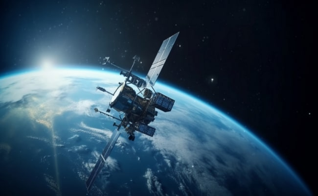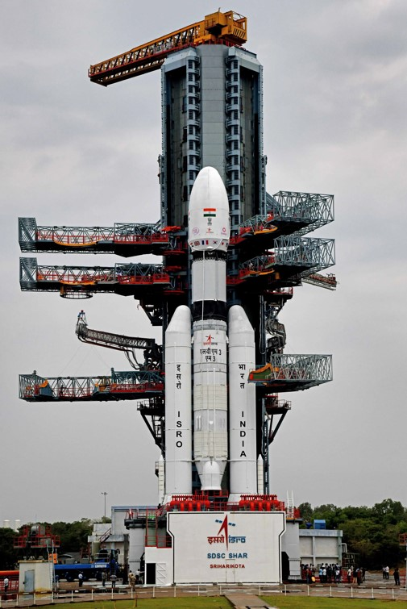
-------------------------------- Science --------------------------------
----------------------- India's contribution to ----------------------
----------------- Satellite Technology -----------------

India has contributed to satellite technology since 1962, when the Indian National Committee for Space Research (INCOSPAR) was established. It has made a huge progress and a major success in expanding the knowledge of our galaxy and space. A satellite is an object that orbits a larger object, it could either be natural or man-made. Satellites communicate by using radio waves to send signals to the antennas on the Earth. The antennas then capture those signals and process the information coming from those signals.
Weather forecasting: India has made significant contributions to satellite weather forecasting through the use of satellites and the development of meteorological research and applications. Satellite Meteorology Division started functioning in India Meteorological Department since early 70's. The satellites launched, for example the INSAT-3DS, are to improve meteorological observations and monitoring of land and ocean surfaces to provide improved weather forecasts. India Meteorological Department was established in 1875. It is the National Meteorological Service of the country and the principal government agency in all matters relating to meteorology and allied subjects. KALPANA-1 is an exclusive meteorological satellite launched by PSLV in September 2002. It carries Very High Resolution Radiometer and DRT payloads to provide meteorological services.
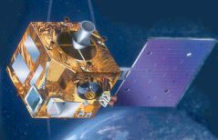
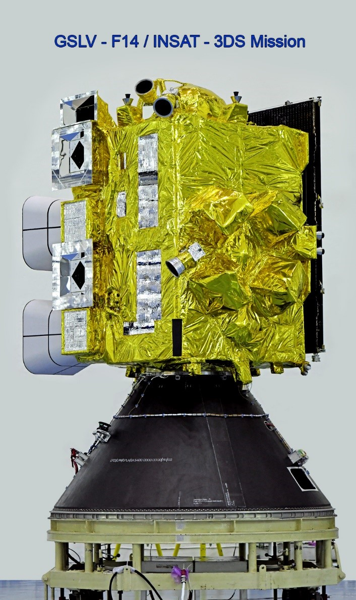
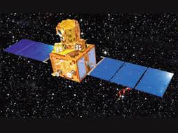
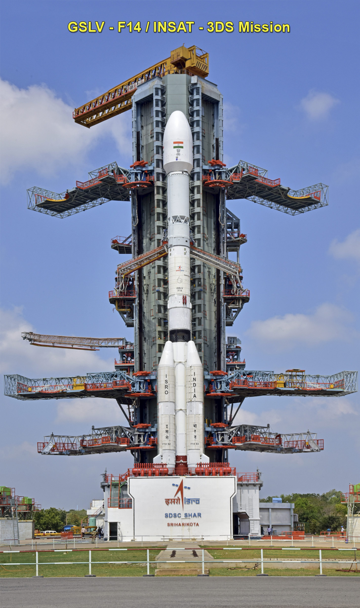
Communication: The Indian National Satellite (INSAT) system and the Geosynchronous Satellite (GSAT) series have revolutionized India's telecommunications sector. These systems have enabled the expansion of telecommunications and TV facilities to remote areas and off-shore islands. It is also one of the largest domestic communication satellite systems in Asia-Pacific region with nine operational communication satellites placed in Geo-stationary orbit. India's first communication satellite, Ariane Passenger Payload Experiment (APPLE), was used for a variety of experiments. It served as a testbed for India's telecommunications space relay infrastructure.
 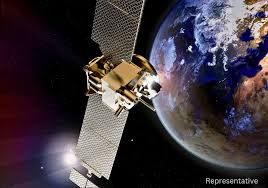
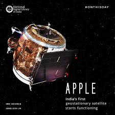
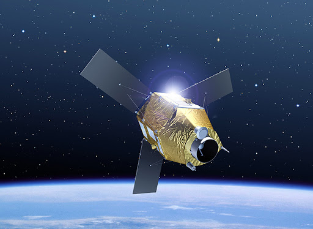
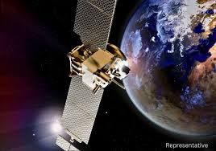
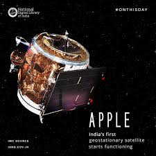
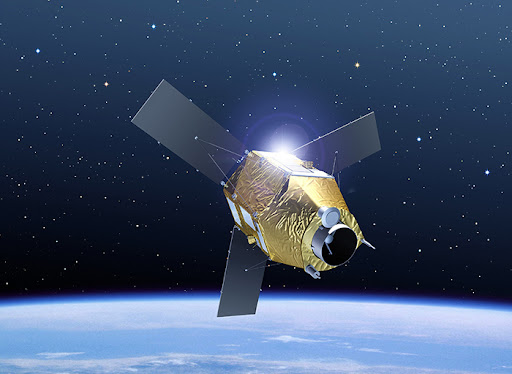
Navigation: India's navigation satellite system is called Navigation with Indian Constellation (NAVIC). NAVIC is a regional satellite navigation system that provides real-time positioning and timing services for India and the surrounding region. It's made up of seven satellites and a network of ground stations that operate around the clock. The satellites are in both geostationary and inclined geosynchronous orbits. NAVIC offers two services; Standard Position Service (SPS): For civilian users and Restricted Service (RS): For strategic users.
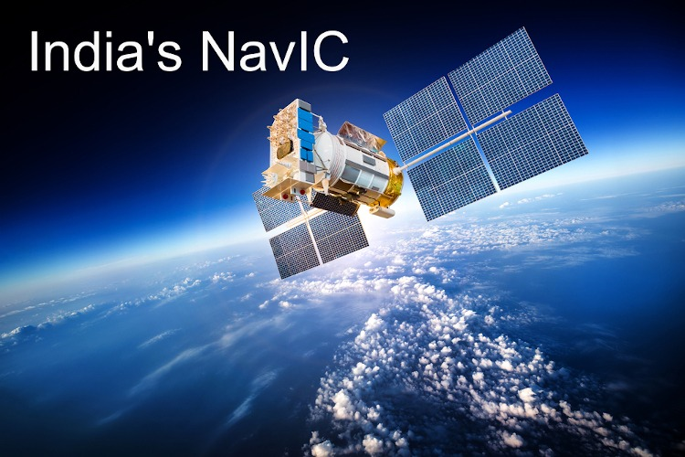

 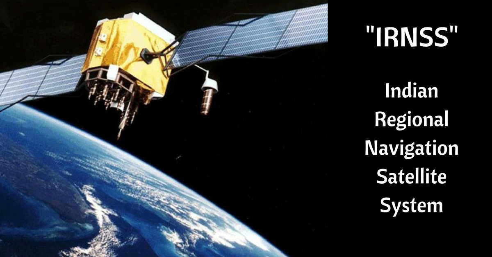
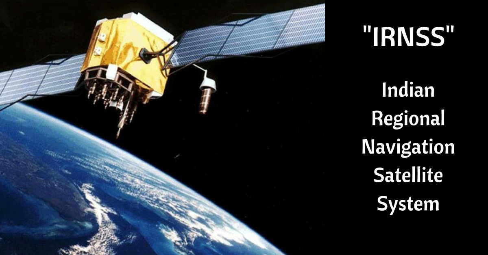
Disaster Management: India's space technology has contributed to disaster management in a number of ways. Disaster Management Support Programme (DMSP). ISRO's DMSP uses satellite data, communication, and navigation services to help manage disasters like cyclones, floods, and earthquakes. The DMSP also includes a Decision Support Centre (DSC) to distribute space-based products and services. Indian Space Research Organisation (ISRO) has implemented a Disaster Management Support Programme (DMSP) for ensuring space based inputs for management of disasters such as Cyclones, Floods, Landslides, Earthquakes, Forest Fire and Drought, by respective nodal Ministries/ Departments in India.
 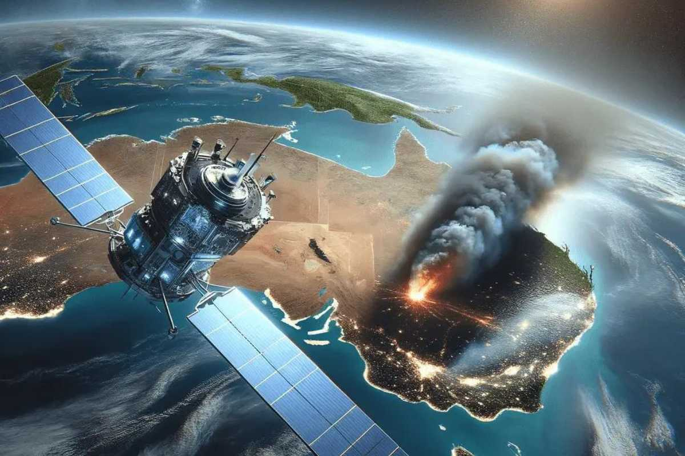
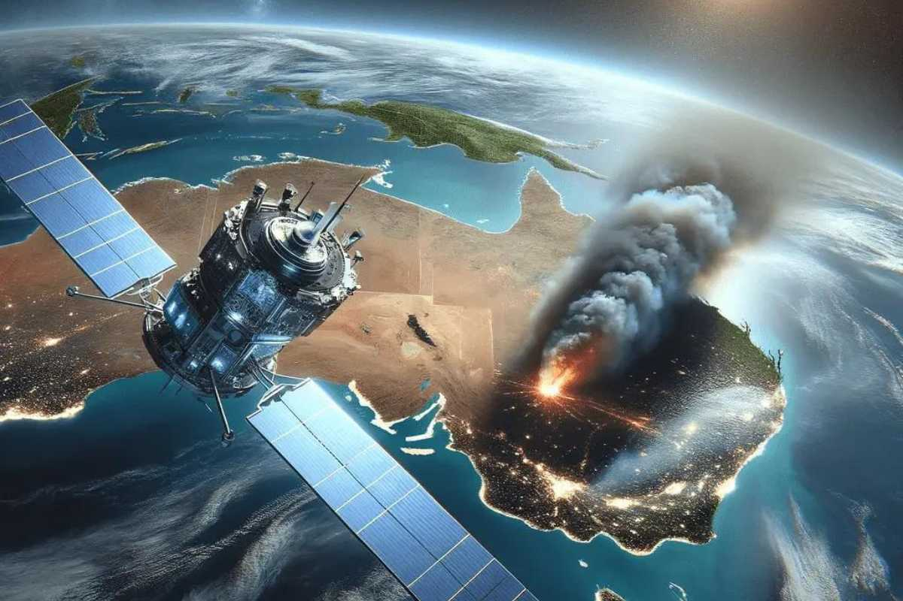
 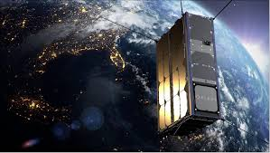
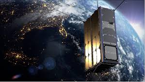